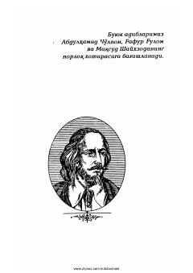

VSVilyam Shekspirning mashhur dramatik asarlari jamlangan tanlangan asarlarining uchinchi jildi.
Ushbu kitob buyuk ingliz dramaturgi Vilyam Shekspirning tanlangan asarlarining uchinchi jildi bo'lib, unga "Venesiya savdogari", "Qish ertagi", "Qirol Genrix IV" va "Antoniy va Kleopatra" asarlari kiritilgan. Asarlar O'zbekiston xalq shoiri Jamol Kamol tomonidan ingliz tilidan tarjima qilingan.